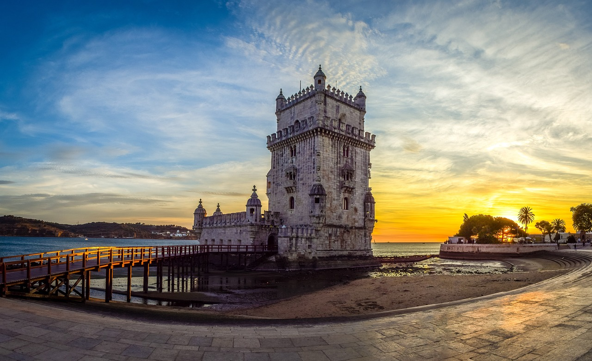
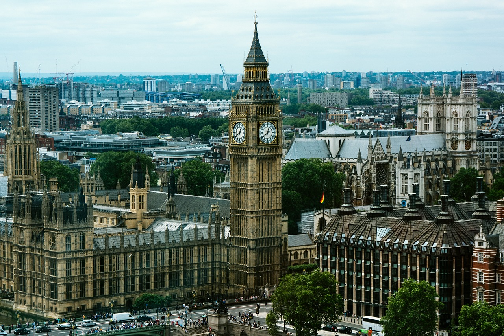
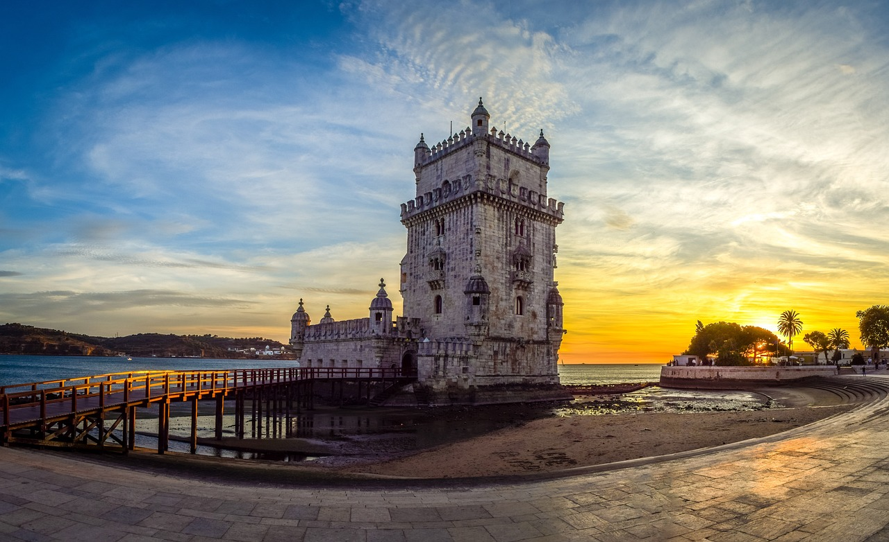
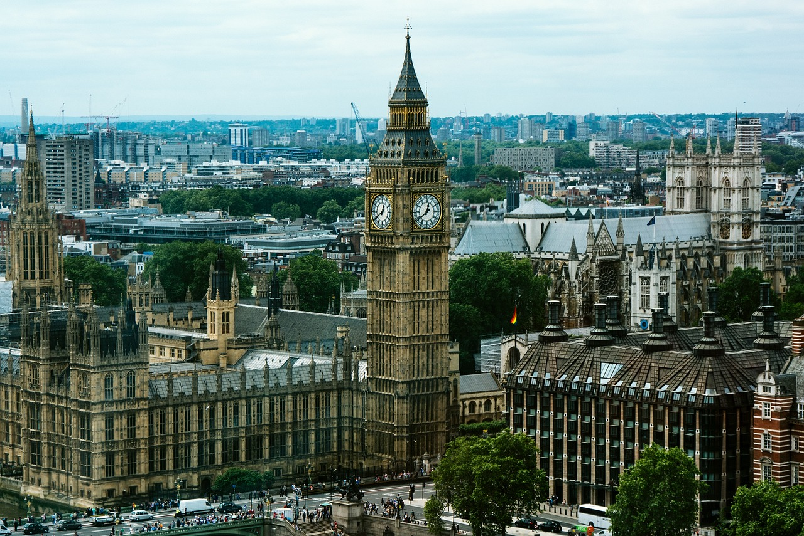

Conheça os Pontos Turísticos
mais visitados da Europa
 



Torre Eiffel
A Torre Eiffel é uma grande torre que está localizada no Campo de Marte em Paris, França. O monumento tornou-se um ícone da cidade, do país e da Europa, o qual recebe milhões de visitantes todos os anos. Ela possui 330 metros de altura, divididos em três grandes compartimentos. A base da torre é quadrada, com cerca de 125 metros em cada um dos seus lados. A sua estrutura, construída basicamente por ferro, pesa cerca de 10 toneladas. Atualmente, a torre um dos pontos turísticos mais visitados do mundo conta com estruturas modernizadas, como acesso por elevadores e iluminação diversificada. Conforme estimativas, a Torre Eiffel recebe cerca de 7 milhões de turistas por ano, sendo comumente apontada como o monumento pago mais visitado de todo o globo.
Voltar para página inicial
Coliseu
O Coliseu de Roma ou Anfiteatro Flaviano é um grandioso monumento histórico e arquitetônico de formato cilíndrico que está localizado na capital da Itália: Roma. Construído na Antiguidade, o Coliseu de Roma atualmente é um dos pontos turísticos mais visitados da cidade. Esse patrimônio histórico mundial revela a habilidade e as diversas técnicas utilizadas pelos arquitetos, engenheiros e construtores da Roma Antiga. É, portanto, um dos maiores exemplos da arquitetura romana. O Coliseu foi incluído pela Unesco na lista dos Patrimônios da Humanidade. Além disso, em 2007 foi eleito uma das Sete Maravilhas do Mundo Moderno.
Voltar para página inicial
Torre de Belém
Construída no século XVI, a Torre de Belém história começou como uma fortificação para defender Lisboa de ataques de navios inimigos. Em torno de 1515, o arquiteto Francisco de Arruda projetou o icônico monumento, que serviu como uma fortaleza para proteger a cidade de Lisboa de ataques ao longo do Rio Tejo. A Torre de Belém também marcou o início das viagens para os marinheiros. Hoje, a Torre de Belém é um dos destinos turísticos mais famosos do mundo, e por uma boa razão. Construída em estilo Manuelino, a torre tem um design único com um baluarte moderno e fortemente armado, projetando-se sobre o rio. Anos depois, a torre foi transformada em farol e, em seguida, em centro de alfândega. Se você estiver interessado na Torre de Belém história, não deixe de visitar esse monumento incrível!
Voltar para página inicial
Big Ben
Londres tem como símbolo a torre do Big Ben, no Palácio de Westminster. O Big Ben é, na verdade, o Great Bell, um grande sino localizado no interior da Elizabeth Tower, prédio que abriga as casas do Parlamento da Grã-Bretanha e traz o relógio mais famoso do mundo - o Great Clock. Muitas pessoas acham que o Big Ben é a Torre do Parlamento, o que está errado.A torre do Big Ben está localizada na região central de Londres, próximo ao rio Tâmisa, no Palácio de Westminster. A sua posição estratégica contribui para que o local fosse um dos cartões-postais londrinos e que atraísse a atenção de turistas.